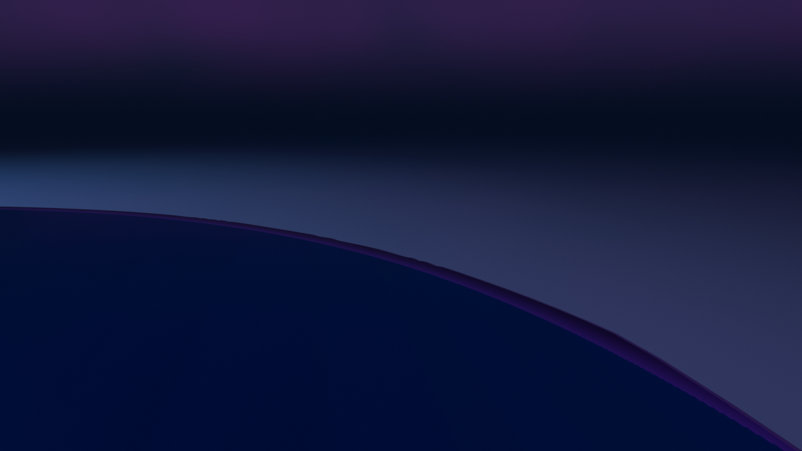
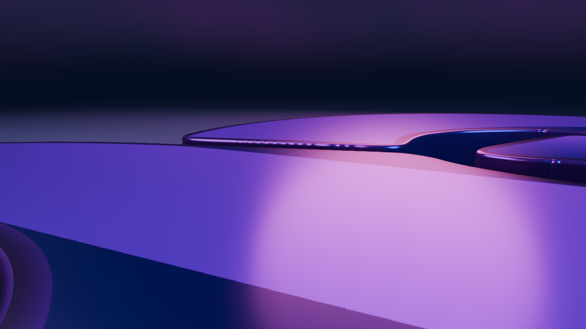
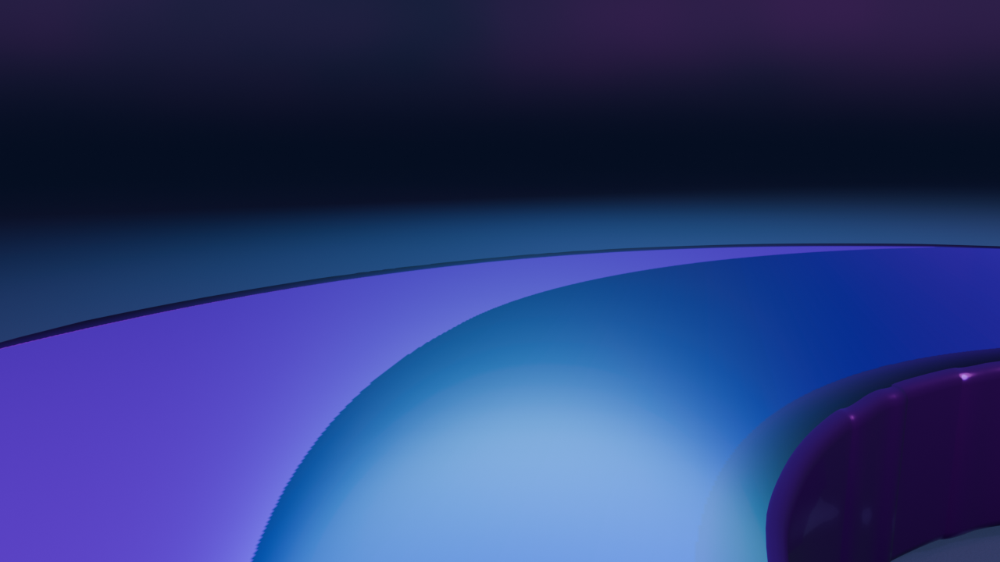
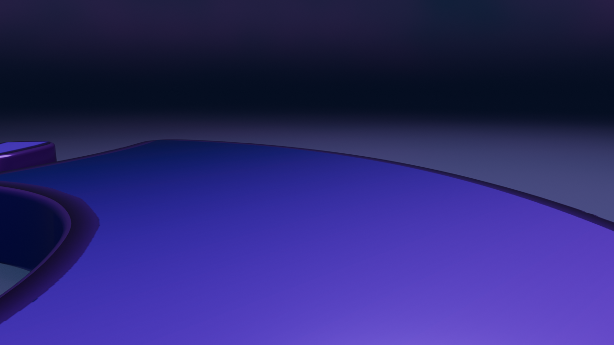
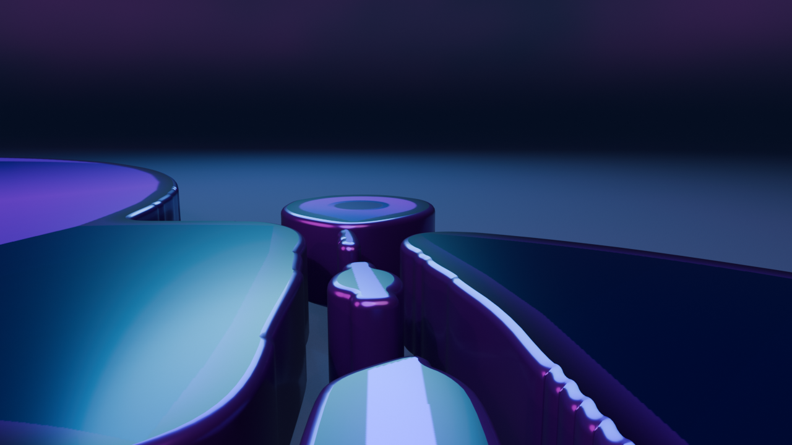
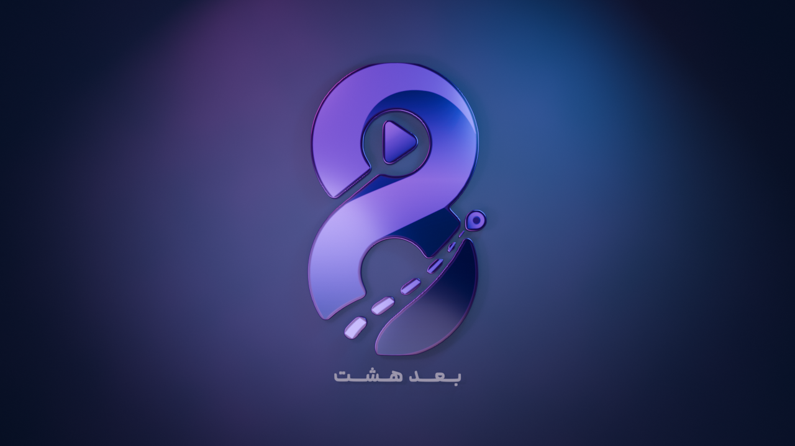
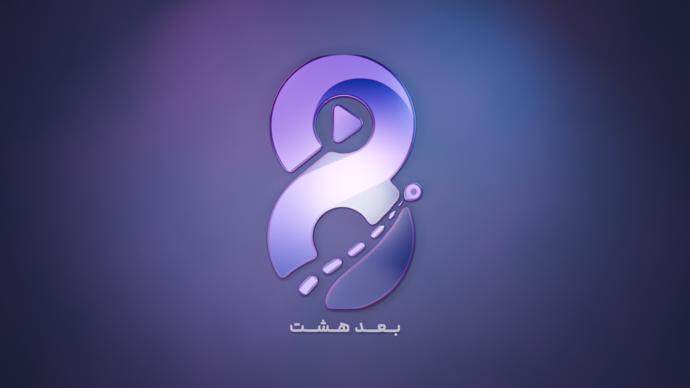
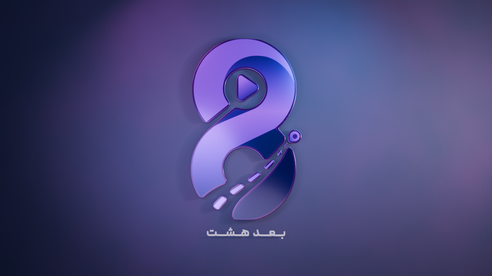
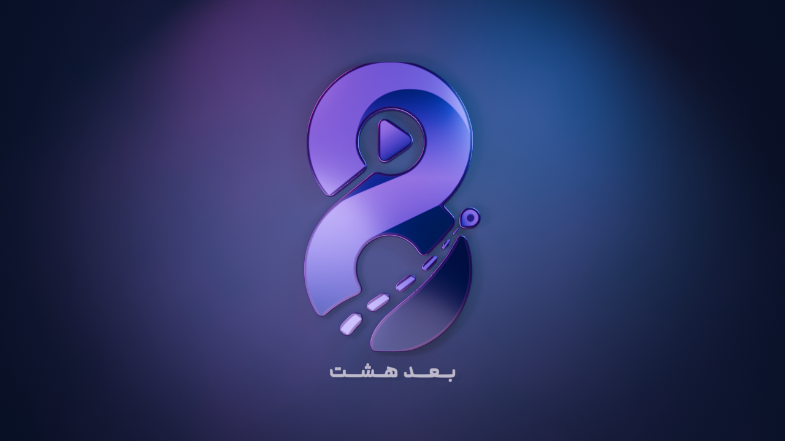

The same camera journey, overhead reveal and single left-to-right sunlight reflection — now with richer violet-blue metal, cyan and orchid lighting, and a brighter satin studio. The reflection clears, the light stops, and the identity holds. Compare the dark version, also with the leading ball removed. The small leading ball is removed; camera movement is unchanged. Select a storyboard image to inspect it at full size.








